第16章 大宗商品图表技术分析
（第9版编者按：为了让读者区分爱德华兹、迈吉和第9版编辑的内容，第9版中加入了第16章关于大宗商品交易的内容。）
从逻辑上说，本书已讨论过的这些丰富有趣的技术形态也应适用于在交易所活跃交易的其他权益类资产及大宗商品。事实上也基本如此。只要这些资产的价格完全由供需关系决定，那么它们的价格走势图就和股票走势图一样，展现出相似的涨跌、建仓及出货、震荡、整固和反转形态。不论公司股票还是棉花期货合约，投机者的目的和心态都是相同的（见图16-1～图16-13）。
因此，理论上可以把我们所学的技术分析应用于任何交易活跃、每日价格及成交量数据公开的期货（小麦、玉米、燕麦、棉花、可可、皮革、鸡蛋等）。当然，也要考虑大宗商品期货合约与股票、债券的内在差异。
在本书前面的版本（第9版编者按：在8版之前）中，对那些想要在类似小麦这样的市场中得到显然存在的大笔快速盈利的交易者，作者警告说，至少在1947年，商品期货的图像对他们“没有什么帮助”。
也有人指出，成功的大宗商品期货图表技术分析直到1941年或1942年前后才出现。但是，此后市场被政府监管主导，期货交易完全受制于朝令夕改、自相矛盾的政策，市场正常的估价机制被严重扭曲。那时，趋势隔夜急剧反转的情况时有发生，事先没有任何征兆。要形成有效的价格形态，就要让供需关系来决定价格，但这套机制并不存在。尽管在“二战”期间，有人通过投资小麦、玉米、棉花期货大发横财或倾家荡产，但都不能归因或归咎于图表分析。
但是后来，技术分析方法在大宗商品交易上的应用得到了重新检视。1956年时，图表可以被称为进行大宗商品交易最有价值的工具。现行的政府监管在没有破坏市场估价功能的情况下，创造了一个“更加有序”的市场。考虑大宗商品和股票之间的各种差异后，基本的技术分析方法可以应用于大宗商品交易。
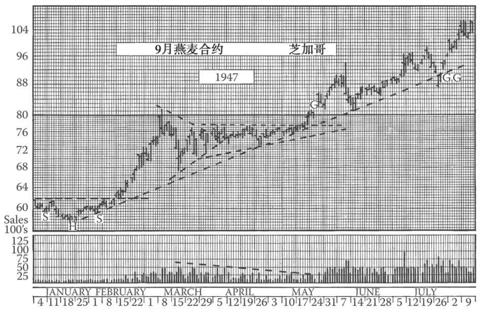
图16-1 20世纪40年代，燕麦的交易形态比小麦更加“正常”。这张图包含了一个头肩底、一个融入上升三角形的对称三角形，一个越过前期顶部的缺口和一条有趣的趋势线。向下穿透趋势线的震仓岛形极具欺骗性
这里，让我们先来大致讨论一下上文提及的大宗商品期货和股票之间的固有差异以及大宗商品图表的一些特征。第一，两者最重要的差异是期货合约（即大宗商品交易所的交易标的）是有交易期限的。比如说，某年10月的棉花合约的交易期限是18个月。该合约作为一只“新股”“挂牌上市”后，在这个交易期限内有稳定的交易量成交，时限到了之后这只“股票”就会消失。理论上，这是一只独立的、不同于其他棉花合约的大宗商品。而实际上，该棉花期货合约的价格与同期其他合约的价格或仓储实物棉花的价格并无太大差异。尽管如此，由于期货合约有交易期限这一特征，长线支撑位和阻力位对其并不适用。（第10版编者按：这并不绝对。你可以自己在长线图表上找找支撑位和阻力位。）
第二，通常情况下，80%的大宗商品期货交易都是套期保值，而非投机。（第10版编者按：21世纪的情况已不太一样。）（实际上，这些合约是用来减少风险，避免投机。）因此，对股票更有意义的短线支撑位和阻力位，对期货来说意义不那么大。同时，投机者要注意的是，套期保值因季节不同而程度不同，要考虑到季节因素对大宗商品价格趋势的影响。
第三个差异是成交量。理解股票交易的成交量相对简单。但是，解读大宗商品的成交量则相对复杂得多，因为理论上，交割日之前出售的合约数量是没有限制的。而股票的流通股一般是公开数据。笔者撰写本书时（1956年），爱迪生联合电气公司有13700203股普通股，这个数量很多年都没有变过，且未来很多年可能也不会变化。该股票的每一笔交易都会发生真实的股票所有权转移。大宗商品期货合约则不同，拿9月的小麦合约为例，没有人知道9月可交割的实物小麦数量，而合约却早就开始交易了。从合约存续的期限内某些时点来看，未平仓量可能会数倍于供应量，而且是合法的。（第9版编者按：成交量数据依然只是价格的补充指标。没有人通过判断成交量获利。）
还有一个重要差异。天气、干旱、洪涝等气候因素都会影响作物的收成，如果我们交易农产品的大宗商品，那么这些无法预见的天气情况会令期货市场趋势发生迅速而剧烈的变化，而股票市场几乎不会受到天气情况的影响。（编者按：除非受到不可抗力、格林斯潘（本·伯南克）的影响。）
在一般市场环境下，那些清晰地反映出趋势变化的形态不仅适用于股市，也适用于大宗商品交易。这些形态包括头肩形、圆顶、圆底和基本趋势线。实际上，趋势线在大宗商品的走势图上往往更清晰，也更有用。其他与短线交易或大规模建仓、出货有关的形态，比如三角形、箱体、旗形等，较少出现在大宗商品的图表上，且在预判趋势方向和趋势大小时也不那么可靠。支撑位和阻力位在大宗商品上的效力不如在股票上那么明显，这点前文也提到过。同理，缺口的技术意义也不大。
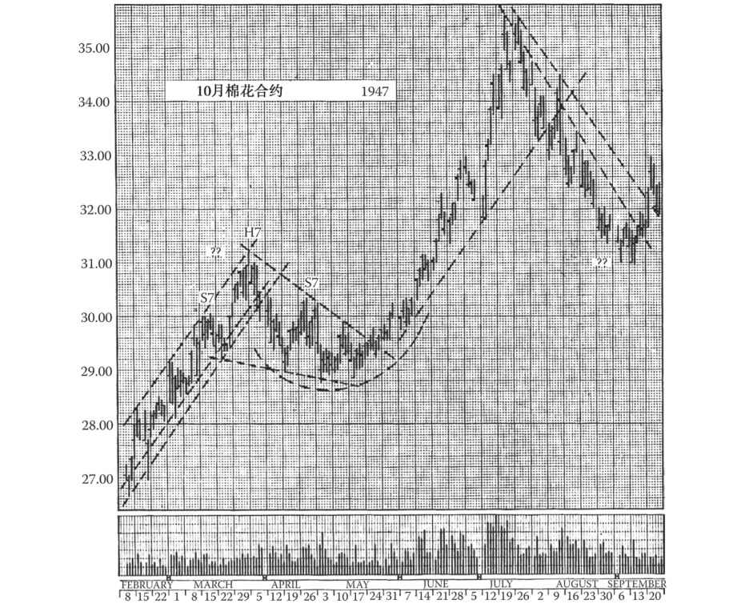
图16-2 与谷物相比，棉花期货的价格上涨超过政府支持价位后，其技术形态主要由供求关系决定。在1947年10月合约（纽约棉花交易所）交易的日线图上，我们可以看到常出现于股票图表的多种熟悉的技术形态，包括关键趋势线、一个没有完成的头肩顶（颈线没有被有效突破）、支撑位与阻力位。双重趋势线在棉花期货图表中并不罕见
本书并不是要解释大宗商品期货市场的运作原理，也不是要为投资者提供指导。本章也仅为有志于深入研究图表形态的投资者提供一些浅见。要想在大宗商品市场赚钱，投资者需要具备专业知识，还要投入大量的时间和精力。普通投资者想要通过证券投资赚钱只要每天花点儿时间分析走势图就可以，但对于大宗商品投机，还是回避为妙。
（编者按：本人也曾担任过大宗商品交易注册顾问，刚开始时，迈吉就给了我以上忠告。我们在本书第5版开始加入了这些内容。后来，我从自己以及同事的经历中发现，本书所述的交易技巧和方法经过改良完全可以用于大宗商品交易。同时，正如迈吉指出的，期货交易的节奏、杠杆和特性都与股票截然不同，新手不经指导就贸然参与期货交易很可能会损失惨重。我们强烈建议新手在实盘交易前进行大量的学习和模拟交易。）
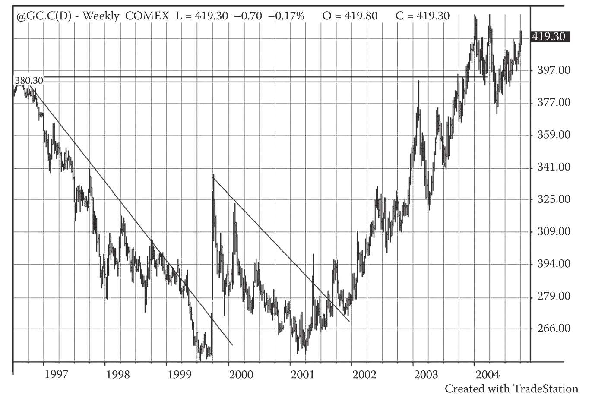
图16-3 该图展示了黄金价格在1997～2004年的圆底形态。罗伯特·爱德华兹曾这样评论圆底：“如果圆底出现在股价大跌之后 ，那么该形态的意义就十分重大，因为这基本上预示了长线趋势的转变和股价的大幅上涨。但这种涨势并不是‘火箭式’的暴涨，在几周内就能走完整个长线趋势。相反，圆底完成后的涨势会缓慢展开，并遭到频繁的干扰，让没有耐心的投资者筋疲力尽，但最终创造出可观的收益。”本图的圆底包含了一段跌势、一个突破双底的假信号（敏锐的短线交易者可以借此赚上一笔）和一段明显的涨势。整个走势呈现为一个巨大的圆底形态
16.1 大宗商品图表技术分析（续）：21世纪的观点
在寻找点金石的过程中，人们在大宗商品和期货交易上投入的金钱和精力要远大于证券交易。这背后的道理很简单。在期货市场，暴富和破产的速度都比证券市场快得多。股市历史上所有的大事件中，几乎没有可以与大宗商品市场的大事件相提并论的，比如亨特兄弟疯狂投机白银、索罗斯击败英格兰银行或是黄金价格暴涨至1000美元/盎司（延期合约）。大宗商品的价格震荡在2005年也绝不罕见：石油价格在50～100美元之间不断变化。想想这样的震荡对于经济和市场情绪的影响吧！在这样的市场环境下，大量研究员搭建形形色色的系统，用于交易各类大宗商品。
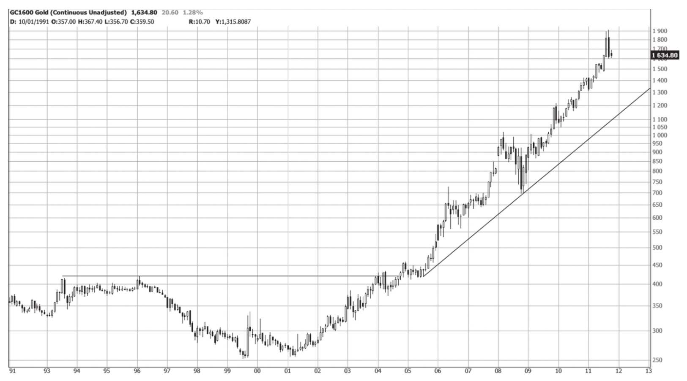
图16-4 截至2011年10月的黄金价格走势图。2005年后的黄金价格走势充分体现出大圆底的巨大能量，同时也展现出图表分析预测后市的能力。遗憾的是，第9版编辑在2005年时并未测算该形态的价格目标。当时，http://www.edwards-magee.com 这个网站对该形态的价格目标进行了测算（读者也可尝试自行测算）：形态深度为248.20美元，颈线为507.40美元，价格目标为755.60美元。事实上，当时人们就想到1980～2008年的整个形态可能是一个大圆底。按照这个推断计算的形态深度为700.70美元，再加上颈线的959美元，我们得到的价格目标为1660美元。这个目标最后确实也达到了。别忘了爱德华兹说过这是可能达到的最小测算目标
16.2 火箭科学家
有时，交易者可从这些大宗商品市场中赚取巨额利润。我曾在加利福尼亚州首家大宗商品交易持牌咨询公司里担任主管，该公司由美国航空航天局（NASA）的火箭科学家R.T.维科维茨（R.T.Wieckowicz）创立。20世纪70年代，当道琼斯指数在1000点左右徘徊时，期货市场的年度回报率甚至可达100%，这种情况持续了数年，让加州那些按特定法则交易的投资者大发其财，并催生了电脑化交易。一群NASA的火箭科学家为该公司开发了丰富的科技手段，以至于人们以为人类智慧已征服了市场，客户会从世界各地蜂拥而来，公司将有永远赚不完的钱。此种盛况确实维持了一段时间，但后来市场走势改变，在牛市中盛极一时的机械交易法在市场横盘时却不再奏效，使投资者损失惨重。所谓的人类智慧，只不过是人、时间、法则、市场的幸运组合而已。
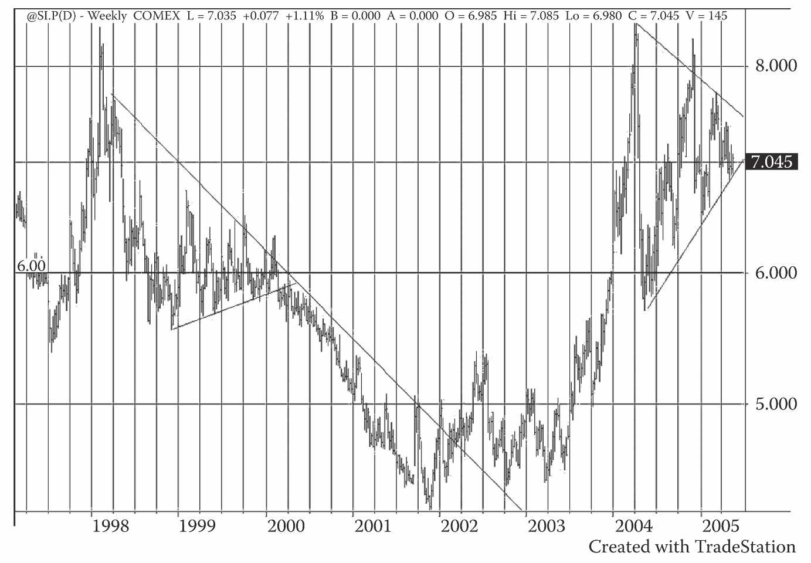
图16-5 本图展示了白银在1998～2005年的圆底形态。白银和黄金在2005年同时构筑了圆底，似乎为此后的经济形势蒙上了一层阴影。这正呼应了同期证券市场出现的长线形态。如果说当时以最乐观的预期来看，证券市场也可能出现类似1965～1982年的宽幅震荡，那么同期大宗商品市场也可能出现类似20世纪70年代的巨幅波动。经验丰富、资金充沛的图表分析师可以在这些市场中赚上一笔，而新手不论是在证券市场还是大宗商品市场都难免要付些学费，但如果他们使用本书所介绍的技巧，那么赚钱的可能性将会大幅提高。除了本图展示的技术形态，我们有理由相信白银出现了严重短缺，且将进一步加剧。泰德·巴特勒（见http://www.doomgloom.com ）是一位长期白银分析师（也是本书编辑的同事），他预测白银价格将会再次飙升。谨慎的投资者（如沃伦·巴菲特，相传他做多了10亿美元的白银）可以通过买入白银来获利
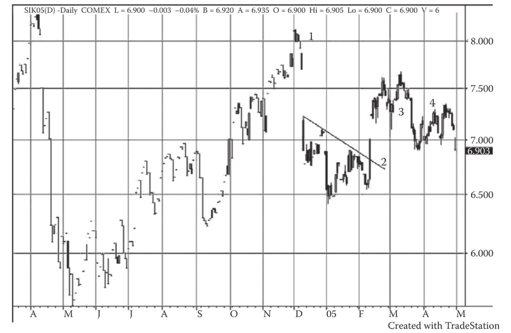
图16-6 这张图展示了截至2005年5月底的银价走势。银价虽然长期前景看好，但短期波动剧烈，资本实力较弱的交易者尤其要小心，此时必须运用一些短线交易策略。图上“1”处的岛形顶温和地提示交易者可获利了结，甚至做空（止损位略高于岛型高点）。“1”之后的急跌提醒投资者离场的迫切性。随后出现的缺口是对不听劝告的惩罚，同时也是对反应敏锐的奖赏（在期货市场上生存，要么靠反应敏锐，要么靠财力雄厚）。此时做空的止损位应降到缺口的上沿，然后再降到下一个缺口的上沿，极短线交易者会在下一个急跌日获利了结。“2”处的趋势线被向上突破时，是一个买入信号，此时止损位升到“3”处的缺口下沿，该止损位几天后被击穿。“4”处是一个卖空信号，此时止损位应为当天高点。期货交易往往需要快进快出。市场永远有这样的赚钱机会
16.3 海龟是什么
20世纪80年代，“海龟交易法”兴起。“海龟交易者”们拜交易奇才理查德·丹尼斯（Richard Dennis）为师，每年的回报率据说高达80%。据说丹尼斯声称，好的交易者并非天生，他像饲养海龟那样培养交易者，海龟交易者由此得名。你可在杰克·施瓦格（Jack Schwager）的著作《金融怪杰》（Market Wizards） [1] 系列中读到更多关于海龟交易者的内容。施瓦格的著作已经成为交易者的入门必读。你还可在http://www.originalturtles.org 上找到一本海龟交易者手册。这本手册由海龟交易者柯蒂斯·费思（Curtis Faith）根据丹尼斯的培训内容撰写，囊括了海龟交易法的基本内容，且明白易懂。此类文件对专业交易者来说必不可少。我认识的每一位专业交易者都有此类操作指引。
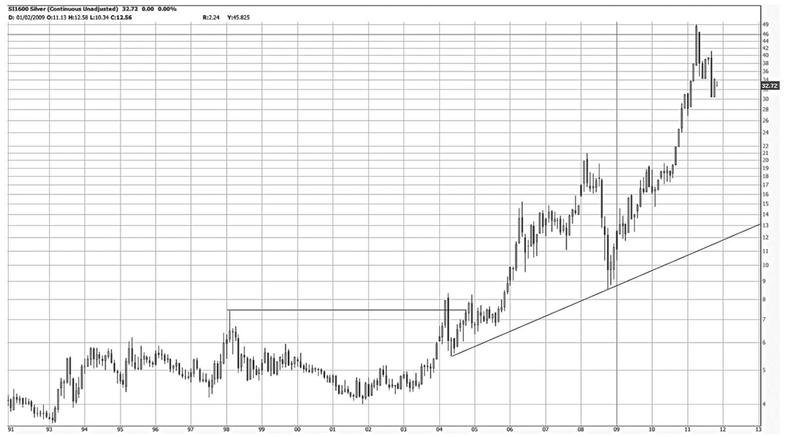
图16-7 这张图展示了截至2011年10月的银价走势，此时本书第9版已经问世。还有什么比6年后的回顾更能验证图表的价值？和黄金一样，白银的技术走势预示着一波大牛市。这段时期，本书作者在http://www.edwards-magee.com 上反复发文，指出白银的牛市即将到来。整个形态的深度为33.96美元，加上颈线高度37.5美元后达到71.46美元。这个价格似乎很高，但测算下来就是这样
20世纪90年代末，许多海龟交易者在期货市场一败涂地，损失惨重。正所谓“成也萧何，败也萧何”。现实再一次证明了：所谓的人类智慧，只不过是人、时间、法则、市场的幸运组合而已 。
海龟交易法源于理查德·唐奇安（Richard Donchian）的通道突破交易法。在唐奇安交易法（Donchian system）下，交易者在20日高点被突破时做多，在20日低点被击穿时做空。20世纪70年代，邓恩（Dunn）和哈哥特（Hargitt）对多种机械交易法进行了评估，发现唐奇安交易法是当时的佼佼者。那么到了今天，唐奇安交易法还有效吗？对于趋势明显的市场来说，仍然有效。海龟交易法呢？答案是一样的。和几乎所有机械交易法一样，唐奇安交易法和海龟交易法本身并不知道市场是否存在明显的趋势。计算机只会机械地遵从法则，而图表分析师能够在机械交易法的基础上审慎地应用技术图表分析，从而有效地降低风险、提高收益。
16.4 在21世纪的期货市场应用爱德华兹和迈吉的方法
在我作为大宗商品交易顾问的职业生涯中，见过许多用“迈吉式图表分析法”大获成功的投资者。当然，他们也会考虑其他因素，但手工制图是决策过程的关键。有些交易者运用简单的趋势线及价量分析，有些则将趋势线与支撑位/阻力位结合起来分析。他们的投资战略都是顺势而为 。
回顾期货市场过去一些年的走势后，我觉得股票的图表分析法完全可应用在期货上。从根本上看，就图表分析而言，证券交易的问题与期货交易中的其实一样。市场上存在趋势吗？支撑位和阻力位在哪儿？价格是否已有效突破？价格走势呈波浪状吗？何时该进场，何时该离场？
对于已习惯股票市场的交易者来说，期货市场上最大的挑战是交易速度。就像大学橄榄球运动员进军美国国家橄榄球联盟一样，交易者必须经历痛苦的学习，并付出沉重的代价。本书并非期货交易新手的教材，但本章末尾有几张期货市场走势图，足以说明图表分析法完全可用于期货市场决策。不过请注意，图表分析法作为一种定性分析过程，有自己的缺点（或优点），而且不会像机械交易系统那样代替一般交易者做决策。
另一方面，突破就是突破。先撇去涨跌停板缺口的问题不说，缺口就是缺口。趋势就是趋势。牢牢抓住制图方法可以给图表分析师来带很大的优势，让他认识并辨别市场可能会出现的基本特征，并选择观望或交易 。有经验的图表分析师会对市场进行定性分析，而机械方法则不然，会盲目地一直执行交易，直至资金耗尽。如果市场不好，图表分析老手可能会说，市场还没有触底，进场的时机还没到。他可以分辨出交易性机会和趋势性机会的根本差异，并据此调整交易战术。正如迈吉在前文中所说：
在一般市场环境下，那些清晰地反映出趋势变化的形态不仅适用于股市，也适用于大宗商品交易。这些形态包括头肩形、圆顶、圆底和基本趋势线。实际上，趋势线在大宗商品的走势图上往往更清晰，也更有用。其他与短线交易或大规模建仓、出货有关的形态，比如三角形、箱体、旗形等，较少出现在大宗商品的图表上，且在预判趋势方向和趋势大小时也不那么可靠。支撑位和阻力位在大宗商品上的效力不如在股票上那么明显，这点前文也提到过。同理，缺口的技术意义也不大。
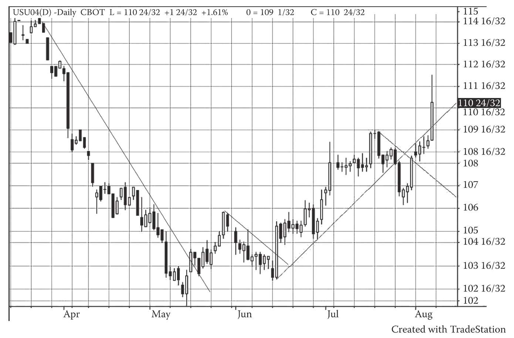
图16-8 这张图展示了美国国债的走势。期货市场的价格波动远比现货市场剧烈，原因是恐惧与贪婪会被杠杆放大数倍。但对于2004年9月国债的这张走势图，我们可通过简单的图表分析来解读。始于3月的下降趋势（“1”处） [2] 完全可通过简单的趋势线及趋势分析来应对。这波跌势在5月以两根大阴线告终。而根据基准点法分析，这波跌势应在5月1日结束。如果要做多，那么应快进快出，因为我们不知道价格是否已经见底。“2”处向上突破趋势线是强烈的做多信号，“3”处的趋势线告诉我们应继续做多，直到7月底趋势线被向下击穿后才应翻空，然后“4”处的两天走势又是做多信号。显然，我们将紧凑的短期趋势线和大幅波动的交易日（或大阴线）作为信号。将急跌日作为信号，与其他指标结合起来分析，是交易者常用的方法
现在来看，这些说法依然正确，正如爱德华兹、迈吉和我在本书中阐述的所有原则。事实上，如果不说明合约名称和交割日期，大多数期货图表都可能会被分析师当成股票图表。在对缺口的认识上，我和迈吉的观点可能略有不同。一旦出现涨跌停板，两者就可以得到区分。 [3] 很明显，涨跌停板缺口具有突破意义。但总的来说，缺口在期货图表分析中的意义与股票图表相似。
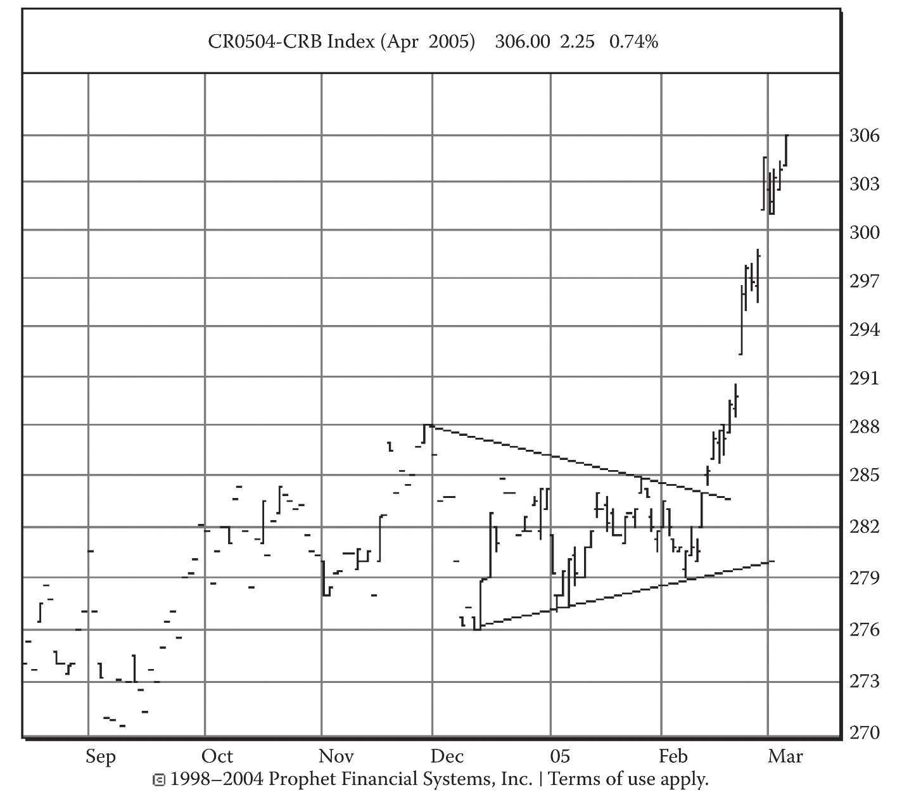
图16-9 请注意路透商品研究局指数（CRB指数）2005年4月的期货走势。三角形形态不但常适用于股票，也适用于期货。该图出现了两次突破缺口、两次逃逸缺口。第二次逃逸缺口之前的形态有些令人诧异，可以被认为是旗形，但与之有同样的效果，止损点刚好在缺口/大阳线之下。读者很快就会发现本书讨论过的所有图表分析原则在此处都得到了验证。主要的差异在于止损位的设定。其实，如果投资者财力足够雄厚，也可以采用与股票交易相同的止损方法
另外，从数学的角度看，我们也有理由借助简单的图表分析来交易期货。因为技术分析具有广泛适用性。趋势就是趋势，趋势线就是趋势线。在期货交易中，如果你发现有一段可疑的趋势（并通过技术分析设置了止损点），采用基准点法进行交易或持续观察该趋势，并在趋势反转时离场，那么这和在股市中的应用区别不大。当然，因为杠杆的关系，你必须在期货市场更谨慎地防范风险。在期货市场，即使是“正常的回调”，也会给坚持持仓的投资者造成极为惨重的损失。从中可见止损的重要性。
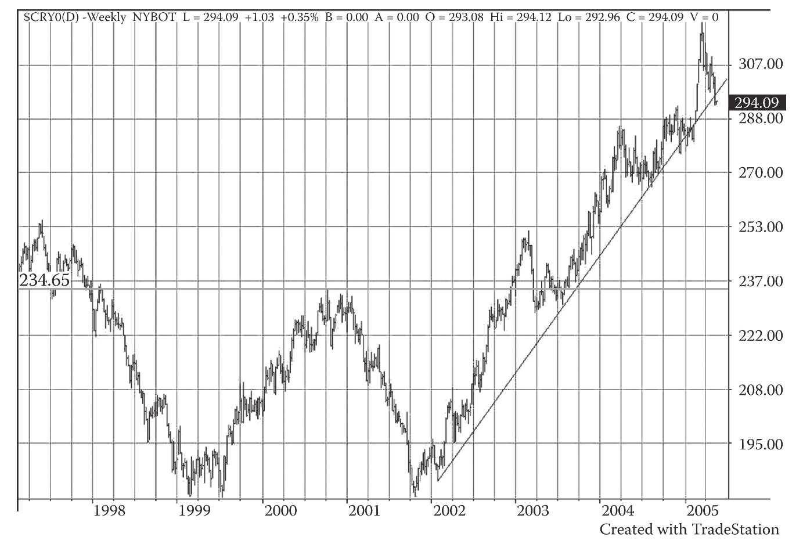
图16-10 路透商品研究局指数（CRB指数）长期期货走势图。稍加分析，我们就会发现图上的巨大双底形态，并思考其启示。如果印度与美国竞争自然资源，那么将呈现出一个全新的经济模式。很明显，大宗商品出现了牛市。在第42章中，笔者建议资本应流入有流动性的市场，而不应陷入一潭死水。此外，笔者还建议良性的相互对冲应该是做多一个升势中的指数，同时做空该指数中下跌的成分股
16.4.1 止损位
有些投资者会使用某些特定的资金管理规则来设置止损位，而不用技术分析法。我认为通过基准点法或支撑位/阻力位来确定止损位效果更好。本书第26章介绍了通过调整头寸大小来管理风险的方法，我认为这样更合理。借助资金管理规则设置止损位，许多投资者也都大获成功。但如果投资者不合理设置止损位，那么他迟早会损失惨重 。
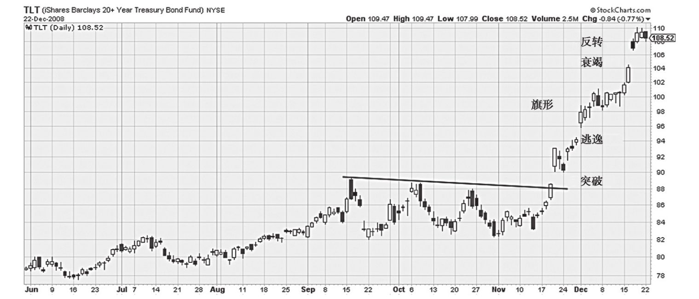
图16-11 以TLT ETF债券指数反映的20年期债券价格走势，该图展现出了数个经典的技术信号。
2008年年末，该指数展现出明显的技术形态和信号。这种形态之前就出现过，并会在未来继续出现。
该指数先是以一个强劲的跳空缺口突破了一段横盘走势。这个缺口超越了趋势线，因此具有重大意义。并不是每一个缺口都代表着某种信号，但在这个例子中，该跳空缺口极为重要，因为缺口形成当天出现了大阳线。此时应买入。
这类缺口叫作突破缺口。之后，债券价格持续走高，几天之后另一个缺口出现。这是一个逃逸缺口，代表了另一个信号。
逃逸缺口出现后，债券价格横盘震荡了几天。然后一个旗形出现，这对于投资者来说是一个清晰的信号。罗伯特·爱德华兹曾描述过怎样利用旗形操盘。他说“旗面往往在旗杆一半处飘荡”，也就是说当债券价格经历了火箭式暴涨并走出旗形后，至少还会涨“半个旗杆”的距离。
旗形以一根大阳线（信号）结束，随后另一个缺口出现。这是一个衰竭缺口，清楚地告诉投资者应该清仓，同时反手做空。
交易老手首先会抓住一开始的信号，即横盘走势结束时的缺口。然后，他会在接下来的几个信号处继续买入。当旗形结束时，他应该已经累积了大量仓位。如果他能在价格达到峰值（衰竭缺口出现）时抛出，那么就能获利丰厚
简单来说，基于资金管理规则的止损位取决于你最多愿意承受的本金损失（2%、3%、4%或更高）。例如，威廉·欧尼尔（William O’Neal）认为止损位应设在比买入价低8%的价位。这是个粗略的计算，未必处处适用，但总比没有任何止损来得好。严格说来，如果想要把资金风险控制在3%，我们可以上述8%的规则来确定止损位和第26章介绍的史考特方法来确定相应的股数或合约数。海龟交易法也采用类似的步骤。众多研究已经证明，一笔交易的风险大小（如1%、2%、3%）与股票波动性直接相关。
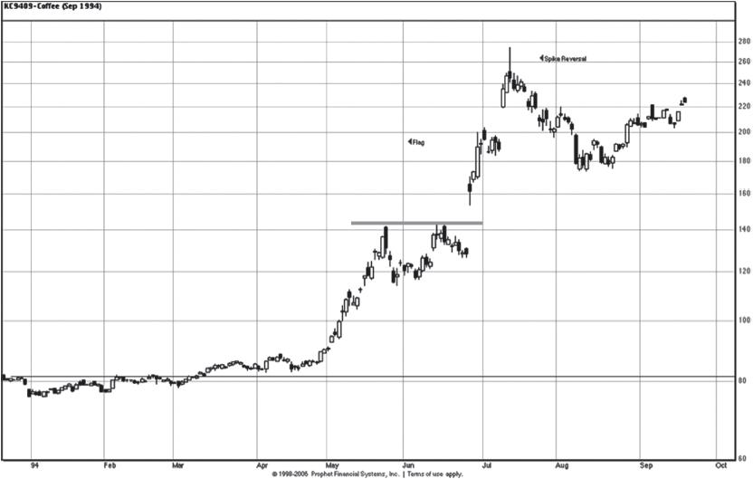
图16-12 本图是1994年9月咖啡豆价格走势。回看这段走势，我们发现一切都是那么显而易见。
水平趋势线被突破后，投资者开始建立多头仓位。该仓位一直没有遭遇任何危险。由于5月之前都没出现过任何重大跌势，所以止损位可提高到低点下5%的价位（根据基准点法确定）。随后，我们根据5月的跌势按照基准点法确定了止损位。此后出现的缺口让投资者大赚了一笔。随后，旗形出现，接着是另一个缺口，这都意味着钱将源源不断地流进投资者的口袋，直至图上出现长钉反转形态，这是明确的离场信号。
这一天，开盘时跳空上涨，盘中试探高位，最后收于开盘价以下。这是再明确不过的反转信号
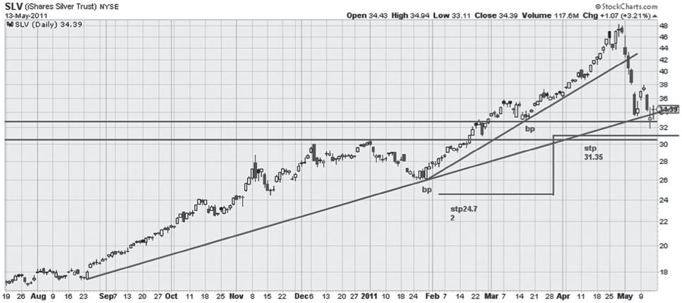
图16-13 本图展示了白银价格在2011年5月11日的顶部。在2011年第1季度，白银价格飙升。看过了前文有关圆底的内容后，大家一定不会感到惊奇。在这幅图上，白银价格几乎是沿着抛物线变化。最高点出现在4月25日，这天银价出现反转走势。仔细观察这根K线，我们可以发现当天开盘时银价跳空上涨，但盘中价格一直下跌，收盘回补开盘缺口。此时，短线交易者涌入推高银价，所以银价并未收于全天最低点。次日，开盘向下跳空，之后银价一路下跌，狂欢结束。当时趋势变化的迹象非常微妙。
4月25日看上去像是一个反转日。26日的跳空缺口可以视为对衰竭缺口的回补，这点在图上并不明显（因为影线的缘故，完整的价格走势未在图上反映）
（第10版编者按：在本书第10版中，我们新增了第27章来介绍几种设置止损位的方法。）
16.5 林林总总的交易方法
如前所述，在我（以及迈吉）看来，合格的图表分析师可以通过图表在期货市场上获利。当然，影响最终结果的还有风格、秉性、智力、判断力等因素。现在我们只看方法，其他的问题可参考交易大师亚历山大·艾尔德博士（Dr.Elder）的专著。早在电子计算机出现以前，图表分析师就已经证明了自己在期货市场上的能力。事实上，日本的稻米交易商早在18世纪就已使用K线图指导交易。
20世纪70年代，添惠公司（Dean Witter）和美林公司（Merrill Lynch）的圈叉图分析师在期货市场上获利丰厚；应用最小二乘曲线拟合法、计算移动平均值、运用深奥统计技术的分析师都在大宗商品上屡有斩获；而那些顺势而为的海龟交易者也大赚特赚。正如老话所说，“条条大道通罗马”，指导交易的方法可以有许多种。虽然我曾经通过基于数据的机械交易法大获成功，但我现在对“顺势而为”的法则越来越着迷。和海龟交易法一样，图表分析本质上也是“顺势而为”。道氏理论就是一套“顺势而为”的法则。在此类法则下，分析师面对的是没有经过数学运算的数据。所有基于数据的交易法则都有一个基本缺陷：盲目性。它们没有能力将森林与树木区别开。相比之下，有经验的图表分析师能感知到市场趋势转变的信号，并及时做出反应，而这些信号往往非常细微，根本无法用计算机程序来捕捉。但是，即便运用那些“顺势而为”的法则（如海龟交易法），你也可能掉进陷阱。当市场参与者知道股价在站稳20日均线后往往有大量资金入场，就会设陷阱来诱捕这些资金。此时如果能运用本书中的知识，你就能避开这种陷阱。
16.6 持续学习、严守纪律
想在期货市场上生存乃至成功，你必须精通K线图且机敏过人，因为期货市场的杠杆率可达股市的数倍，交易速度也可达股市的数倍。我在图16-9中展示了非常紧凑的趋势线和向上突破的走势，我认为这种图形是现在（21世纪）期货交易市场常见的形态。一名证券交易高手所具备的素质也能使他成为期货交易高手，只要他能适应快速、高杠杆的期货市场。此外，你可能需要在研究期货的同时练习股票的技术分析。我常向我的学生讲起一件事：交易大师理查德·威科夫（Richard Wyckoff）进行自己的第一笔投资时，已在证券行业学习了8年，他接着又花了6年时间研究市场，然后才开始从事交易。
迈吉方法将为你的期货操作技术奠定重要基础，前提是你持续学习。机械分析法有其优点，与图表分析相结合后则相得益彰。此外，不管你使用哪一种方法，都要善于判断、持之以恒。许多交易大师在被问及成功秘诀时往往会说两个字：纪律。这指的是他们可以计算并通过设置止盈/止损位来严格控制风险。
期货交易者可向爱德华兹和迈吉学到一项最重要的本领，这就是识别市场、交易或趋势的特征，并调整自己的策略。
16.7 20世纪70年代大牛市的回归
下一轮大宗商品大牛市可能始于本书第10版即将问世的2012年；在这轮牛市中，上述方法及法则将再次给投资者带来丰厚回报。
在这本经典图书的第9版里，我展示了本书对于期货交易者的价值。经验丰富的分析师仅通过简单的经典图表分析，就能在期货市场上取得成功。海龟交易法等顺势而为的机械交易法一直以来都很有效，未来也将一直有效（也许需要一些微调，比如引入图表分析的大框架）。波浪分析法（如第28章介绍的基准点法）也很有用。就连移动平均线法等基于数字的法则，在与图表分析相结合后也很有用。
[1] 此书中文版已由机械工业出版社出版。
[2] 原书此图中没有标出这些数字，疑有误。—译者注
[3] 美国股票没有涨跌停板，但期货有。—译者注